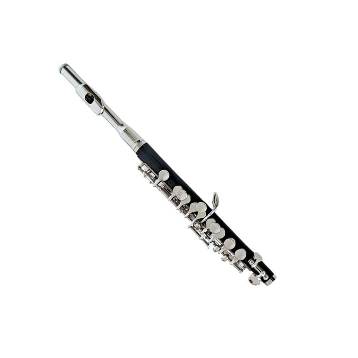
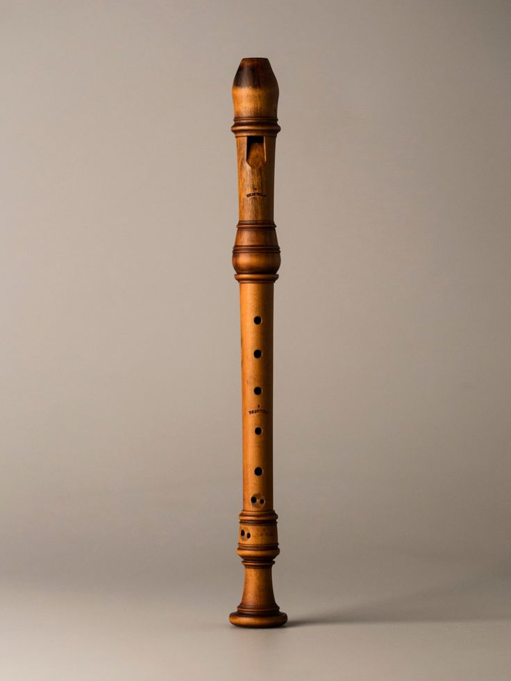
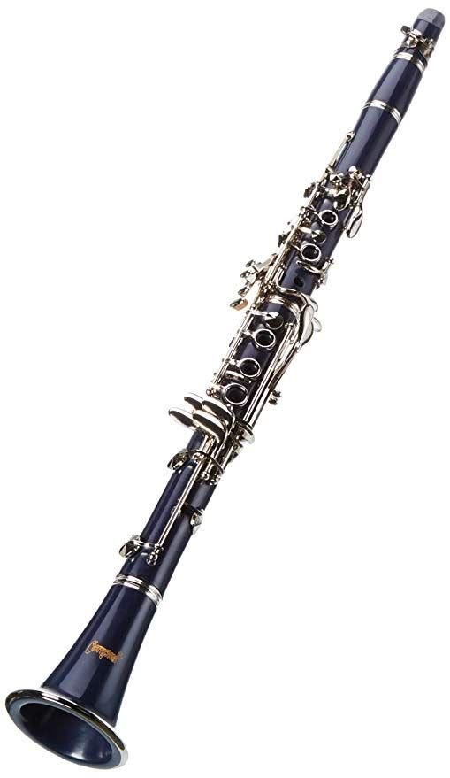
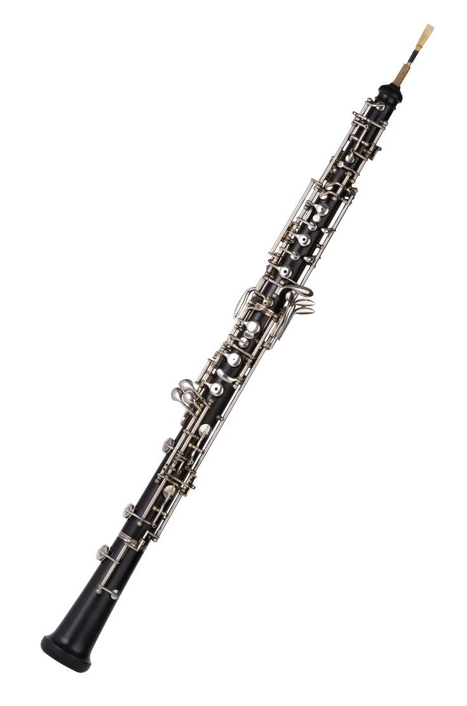

Types of Woodwind Instruments
FluteThis is a category of woodwind instruments that produce sound by blowing air across a hole. |
|
 |
PiccoloThe piccolo a side blown woodwind that is believed to have originated in Italy and later perfected in Germany around the 1790's in the late 18th century. An intresting fact about the piccolo is that it evolved from the military fife. The piccolo is the smallest instrument in the woodwind family. Piccolo is made of silver or nickel. It has a headjoint where the player blows, the body is covered in a complex network of metal keys, rods, and padded covers. These are designed to open and close with minimal finger movement for speed, it has a narrow bore/ tunnel which forces the air to move fast and creates the signature high-pitched vibrations. The piccolo is suprisingly difficult to play due to how small the opening a player is to blow into is, and requires high pressure and firm lip shape to hit notes. |
|  |
RecorderThe recorder is a fipple flute meaning it has a built in whistle mouthpiece you blow directly into rather than across like other flutes. It originated Europe during the middle ages around the 1300's. A fun fact about the recorder is that it is considered a living fossil as it is one of the instruments which stayed largely unchanged retaining most of it's Baroque design. The recorder characteristics include a block fipple that creates a narrow windway directing air against a sharp edge labium to produce sound.It has 8 holes in total 7 in the front and one thumb hole in the back. Another characteristic is its jointed body that are detachable, recorders differents sizes and types that produce different keys. The recorder has an interesting learning curve which evolves along with the players progress as simple finguring techniques are simple for beginners but the difficulty increases to moderate when looking at breath control to produce crisp sounds one cannot blow too hard or too softly and must find a balance as well as playing high notes which requires learning to cover the thumb hole differently (pinching). The difficulty jumps to high territory when playing complex notes like flats or sharps since the recorder has no keys the player has to learn how to skip holes in certain patterns or cover exactly half of the hole in order to get what they want which is challenging. |
ReedsThese are woodwind instruments that use a wooden reed to vibrate and produce sound and they can be further separated into single reeds (one piece of wood) and double reeds (two pieces of wood vibrating against each other). |
|
 |
Clarinet :Single-reedThe clarinet is a single-reed woodwind instrument that originated from Germany around the year 1700 which evolved from an instrument called the chalumeau by adding two keys enabling the instrument playing higher notes and thus clarinet was born. The clarinet unlike the recorder is a perfect cylinder which gives a deep woody low register clarinets are known for. Its made up of several parts including the mouthpiece,barrel,upper and lower joint and the bell.The clarinet has a moderate learning difficulty as mastering control and tone can be challenging. |
 |
Oboe : Double-reedThe oboe is a double-reed woodwind instrument that orriginated in France during the 17th century. It evolved from an instrument called the shwam. The oboe produces sound when air is blown through two thin reeds that vibrate aginst each other. It has a narrow wooden body, keys to control pitch The oboe's other noticible feature is its slightly nasal tone. The oboe has a high learning difficulty because it requires strong breath control and precise lip positioning to produce a stable sound. |